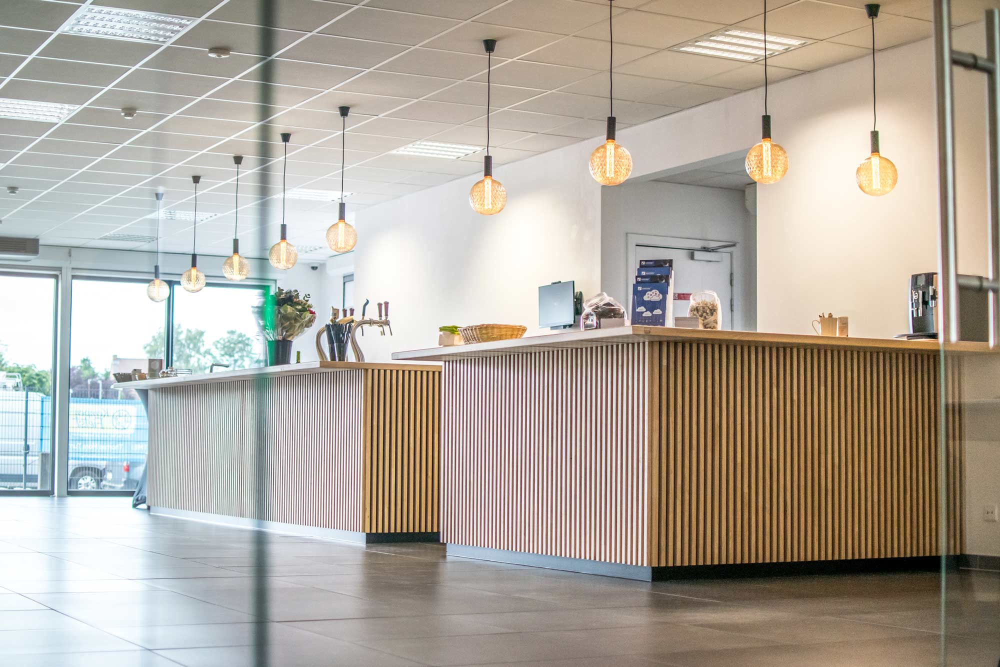

2019: Project Thomas More
Het Digital Experience Center te Geel ging open voor het grote publiek. Hier kunnen bezoekers zich onderdompelen in de laatste nieuwe technologieën, devices, Internet Of Things… Ook worden er events en opleidingen georganiseerd en kunnen organisaties de meetingrooms huren.
Deze aanraakbare muur is gamaakt door eerstejaarstudenten van Thomas More
Team: Bram Bleux, Jonas Claes, Brent Druyts, Thierry Eeman, Frederik Gielis, Rustem Kamalidenov, Joni Lemmens, Myrddin op 't Roodt, Giedre Zalaite
